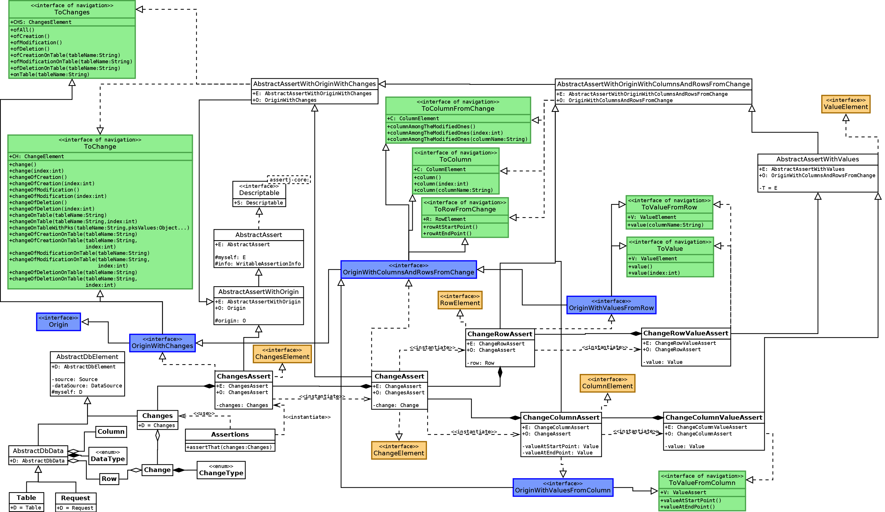

-
Interface Summary Interface Description Origin Defines a class which is the origin of another.OriginWithChanges<CHS extends ChangesElement,CH extends ChangeElement> Defines a class which is theOriginof another and haveChangesElement.OriginWithColumnsAndRows<C extends ColumnElement,R extends RowElement> OriginWithColumnsAndRowsFromChange<CHS extends ChangesElement,CH extends ChangeElement,C extends ColumnElement,R extends RowElement> OriginWithValuesFromColumn<CHS extends ChangesElement,CH extends ChangeElement,C extends ColumnElement,R extends RowElement,V extends ValueElement> OriginWithValuesFromRow<CHS extends ChangesElement,CH extends ChangeElement,C extends ColumnElement,R extends RowElement,V extends ValueElement>
Package org.assertj.db.navigation.origin Description
Origins used by the navigation.
These Origins are the key to help the navigation.
The Origin is used by the AbstractAssertWithOrigin.returnToOrigin() method
to return to the previous instance that provides assertion methods :
for example to return to a object with assertion methods on a table (TableAssert)
from a object with assertion methods on a column (TableColumnAssert).
As shown in the javadoc of the navigation package, it is possible to navigate to a "smaller" thing (from a column to a value)
but also to a "bigger or equivalent" thing (from a column to another column or to a row).
The second possibility is possible thank to the Origin because the classes with Origin
use the navigation methods of their Origins.
This diagram shows the part on the tables and requests (the origin interfaces are in blue) :

This diagram shows the part on the changes (the origin interfaces are in blue) :

- Author:
- Régis Pouiller